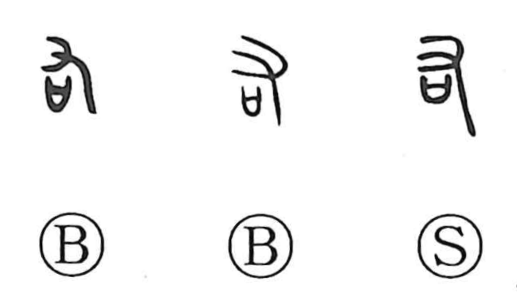

右

Kun: migi | On: u, yuu
right ・ right-hand ・ to help ・ to honor
Explanation
Shirakawa explains 右 as a compound of 又, the sign of the right hand, and 口, here not a mouth but the sacred sai receptacle that held written petitions to the gods. The character shows one holding this covenant vessel in the right hand and praying—seeking the gods’ place and asking for their assistance—whence the sense of “to help,” preserved in derivatives such as 佑 and 祐. Its counterpart 左 depicts the left hand with a ritual implement, and 尋 combines 左 over 右 to convey “to inquire” after the deities’ whereabouts. From this ritual scene the graph later came to denote the right side, and by extension “to value, to honor,” as in the expression 右文.